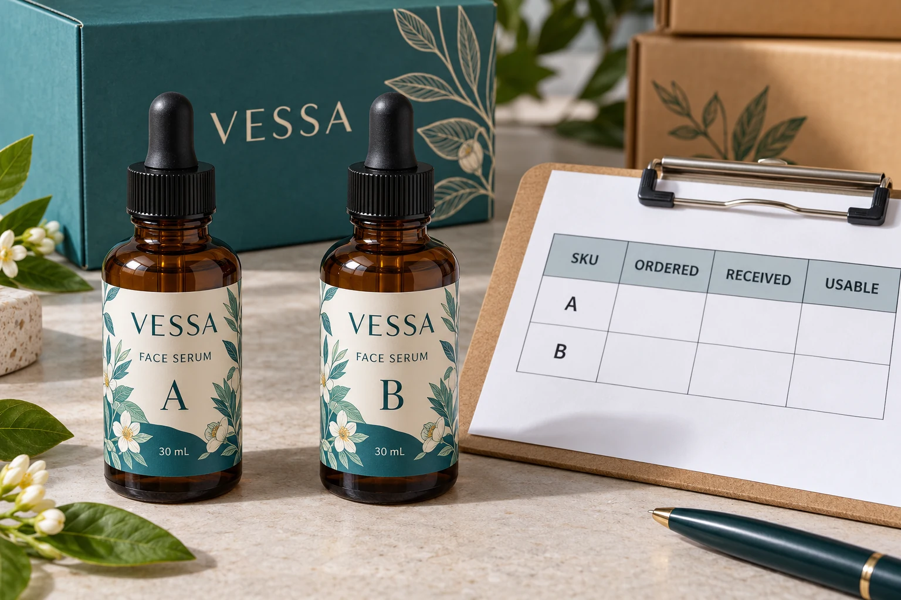

Decide what one ordered unit means
Start with labels, not an ambiguous total of rolls, sheets or sets. Name each printed design and the corresponding product version. Where the pack uses a front and a back, give those components separate lines even if their quantities are intended to match.
Our cut-shape and backing guide explains why a sticker, its carrier and its supplied handling unit are different things. The quantity agreement builds on that distinction: a sheet containing several labels is not one label, and a roll count alone does not describe the number available for the run.
Have the supplier acknowledge the count basis used in its quotation. If it prices sets, identify what each set includes and how delivery quantities will be reported. Resolve those definitions before comparing two offers.
Obtain the actual variance agreement
The YT Labels buying guide asks for quantity per design and a written job quotation. It does not supply an order-specific variance allowance for this hypothetical project. Ask the supplier to state any proposed quantity variation and its commercial treatment explicitly.
Clarify whether the agreed condition applies to each design, each component or another clearly defined unit. Ask how an affected quantity will be reported and what requires further agreement. Do not assume extras are free, an undersupply is automatically acceptable or a percentage seen on another printer's website governs this order.
The point is not to demand identical terms from every supplier. It is to know what the purchase order means before a delivery is evaluated against it.
Translate labels into possible completed packs
Use a simple hypothetical example. A product needs one front and one back per bottle. There are 1,000 usable fronts and 940 usable backs for the same approved version. On that basis, the available labels cover 940 complete front/back sets before accounting for the actual site's operating needs.
The arithmetic is a planning illustration, not a permitted shortage, a recommended spare allowance or evidence of production yield. The remaining 60 fronts cannot turn themselves into backs. A surplus belonging to another SKU does not close the gap either.
Ask the filling site what it needs beyond this simple set count, using its actual method and agreed planning assumptions. Keep any requested operating allowance distinct from a supplier's order-quantity variance. They answer different questions and should not share an unexplained percentage.
Reconcile ordered, received and usable quantities
Create one row for each SKU, revision and component. Preserve the original requested quantity alongside the supplier's acknowledged agreement rather than replacing it with the delivery count.
| Field | What to enter | How it affects the decision |
|---|---|---|
| Identity | SKU, artwork revision and front/back or other component | Prevents balancing unlike labels together |
| Ordered | Required label count and stated unit | Establishes the purchasing request |
| Agreed | Acknowledged quantity terms and any explicit variance | Defines the order-specific comparison |
| Received | Reported count, reference and any count uncertainty | Separates paperwork from confirmed available stock |
| Held | Identified stock awaiting review, with reason | Keeps unresolved stock outside the usable total |
| Usable | Accepted quantity available for the intended job | Supports the component and set calculation |
| Action | Gap, responsible contact and agreed next step | Makes an unresolved balance visible before filling |
First match identities and units. Then reconcile delivery documentation and the site's available-stock record. If a count is uncertain, record that uncertainty and agree how to resolve it; do not label an estimate as a verified physical count.
Compare the resulting usable quantities with both the order agreement and the filling requirement. A delivery can need commercial clarification even when it covers the immediate run. Conversely, a delivery accepted under an agreed variation can still require a scheduling decision if the site needs more usable sets.

Separate a flexible launch from a fixed commitment
One hypothetical brand can adjust its initial filling quantity and hold spare labels for a later run. It may find an explicitly agreed supply arrangement workable after checking each SKU's balance and storage requirements.
Another project has a fixed product mix tied to a booked filling plan. It needs the usable quantity for each relevant component confirmed with the parties involved. A reassuring grand total offers little help if the required version is missing.
Neither situation establishes that every label supplier should follow the same tolerance. The right agreement depends on the order, production proposal and buyer's actual need. Resolve that agreement before treating extra labels as a benefit or a short line as acceptable.
Put the quantity question into the quote request
For custom cosmetic bottle labels, provide container details, dimensions, artwork revisions and required quantity per design and component. Add the intended filling quantity and ask the supplier to state its proposed count basis and any quantity-variation terms in the written quotation.
The low-MOQ guide covers a separate order-planning question: quantities and versions when requesting a quote. Here the missing decision is how the acknowledged order will be reconciled with usable delivery. Use the inquiry form to prepare that request, then send the component schedule by email or WhatsApp. The form does not upload attachments. Keep the confirmed quantity terms with the released version so the receiving team can evaluate the same agreement purchasing approved.